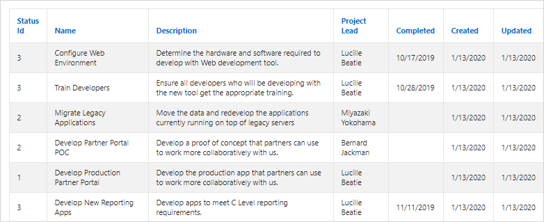

10.8.1 Example Classic Report
View a classic report example.
A classic report is a formatted result of a SQL query. You choose a table on which to build a report, or provide a custom SQL SELECT statement or a PL/SQL function returning a SQL SELECT statement. With the exception of sorting and simple filtering, end users cannot customize a classic report. Both the Create Application Wizard and Create Page Wizard support the creation of classic reports.
The following is an example of a classic report.
Description of the illustration rpt_classic.png
To create a classic report, developers either select a table or provide a SQL statement. Classic reports support general keyword search capability, the ability to specify the number of rows that display, and basic column sorting. You also have the option to include a form page for creating or updating records.
Tip:
Developers can create highly customized reports using report template (in particular, named column templates). See "Report Templates."
Parent topic: Managing Classic Reports